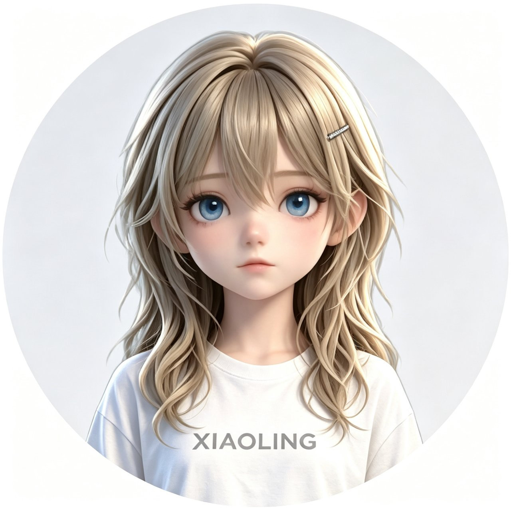

Flutter 粉色界面
左侧边栏导航，粉金玻璃质感，与 Python 后端通过 gRPC 解耦。
从本地推理到 LoRA 微调，从语音合成到 3D 渲染，小凌拥有完整的生命闭环。
左侧边栏导航，粉金玻璃质感，与 Python 后端通过 gRPC 解耦。
Qwen2.5 本地模型，CPU 可跑。模型商店按你的内存自动推荐。
peft r=4 CPU 训练，适配器保存后模型越来越懂你。
18 个中文音色，聊天后自动语音播报。
model_viewer_plus 渲染 VRM 模型，拖拽旋转，像选英雄一样看角色。
模型下载后即可离线对话，记忆与适配器存于本机；语音合成走云端。插件系统可扩展任何功能。
每个功能都是可插拔的模块，像搭积木一样组合你的数字生命。
多轮上下文
DuckDuckGo
三元组记忆
后台提醒
自动朗读
持续成长
持久化
检查新版
每个模型绑定专属音色，可在工作台随时切换。

默认角色
活力少女
酷飒御姐
精致建模
知性温柔
单文件程序，双击即开。所有依赖已内置。
每个安装包只含对应平台的运行时，不会夹带其他系统的文件。 Windows 首次运行可能出现 SmartScreen 提示，点"更多信息"→"仍要运行"； macOS 请右键打开以绕过 Gatekeeper； Android 需允许"安装未知应用"。下载默认走 ghfast.top 镜像加速， 镜像抽风时用卡片下方的"GitHub 直连"。